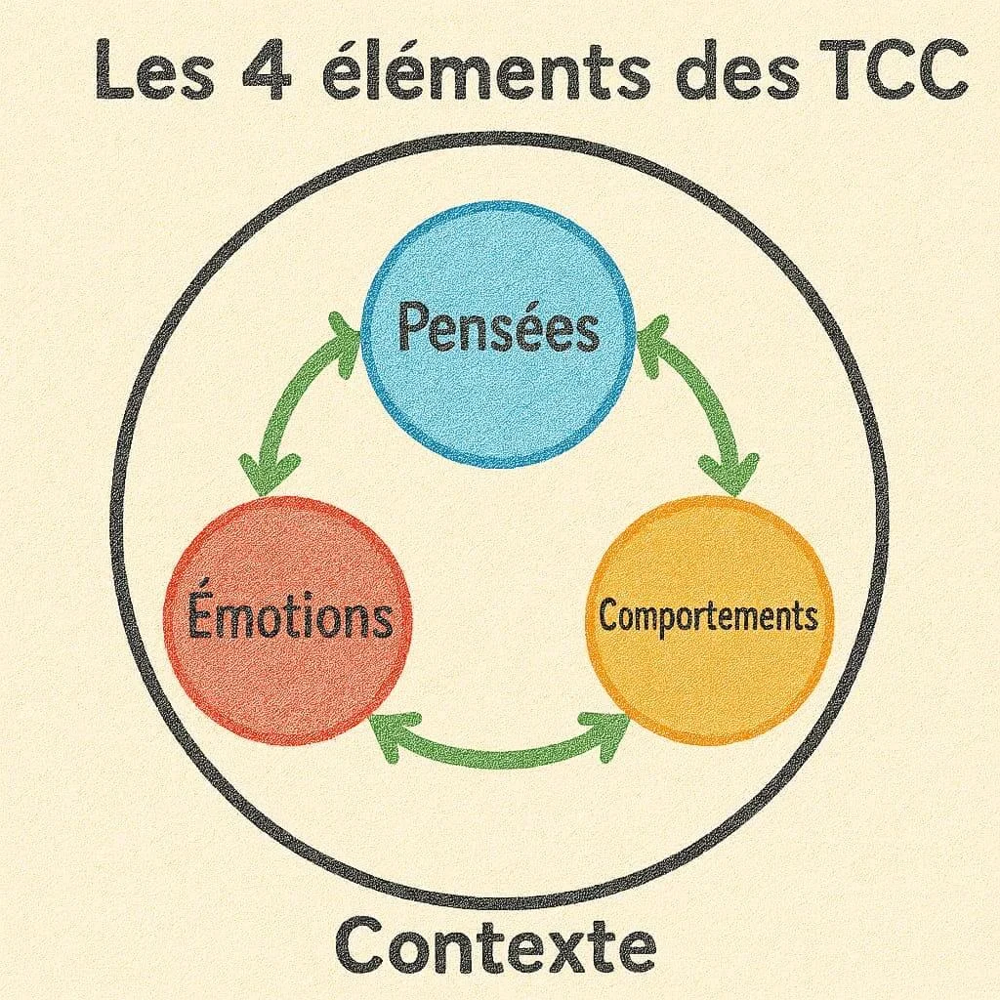

— a first step —
A quiet space to set down what weighs on you, for a little while.
Therapy for anxiety, depression and the hard seasons of life. You do not have to carry this alone.
Book a first appointmentfree 20-minute first conversation · no commitment


My approach
Everyone arrives with their own story and their own pace. I don’t try to fit you into a method: I adapt to what you are going through.
My work draws on listening, integrative therapy and tools from body-based approaches. Sessions are a confidential, non-judgmental space where you can take the time to set things down.
You stay free to move at your own pace, to take a break or to stop at any time.
- Listening
- Confidentiality
- Non-judgmental
What I can offer you
- 01
Individual therapy
Anxiety, grief, burnout, self-esteem, life transitions: regular sessions to understand what is going on and regain some room to breathe.
- 02
Couples therapy
A neutral setting to listen to each other better, get through a conflict or a crisis, and decide together what comes next.
- 03
Teenagers
Sessions adapted to their age, with an initial conversation with the parents about the framework and confidentiality.
- 04
Single session
To take stock, get an outside view or check whether ongoing sessions suit you.

How it works
- 1
A first conversation
A free 20-minute call to explain what you are looking for and check that I am the right person.
- 2
The first session
We get to know each other and decide together what you expect from therapy.
- 3
Ongoing sessions
Sessions of about an hour, usually every week or every two weeks.
- 4
Review
We regularly take stock to adjust the pace, until the end of our work together.
Practical information
- Location
- Practice accessible by public transport, and online sessions.
- Hours
- Monday to Friday, 9 am to 7 pm. A few Saturday slots.
- Fee
- €70 per individual session. Reduced rate available on request.
- Cancellation
- Free up to 48 hours before the session.
Write to me, no commitment
If you are hesitating, a simple message is enough. I reply within 48 hours, Monday to Friday.